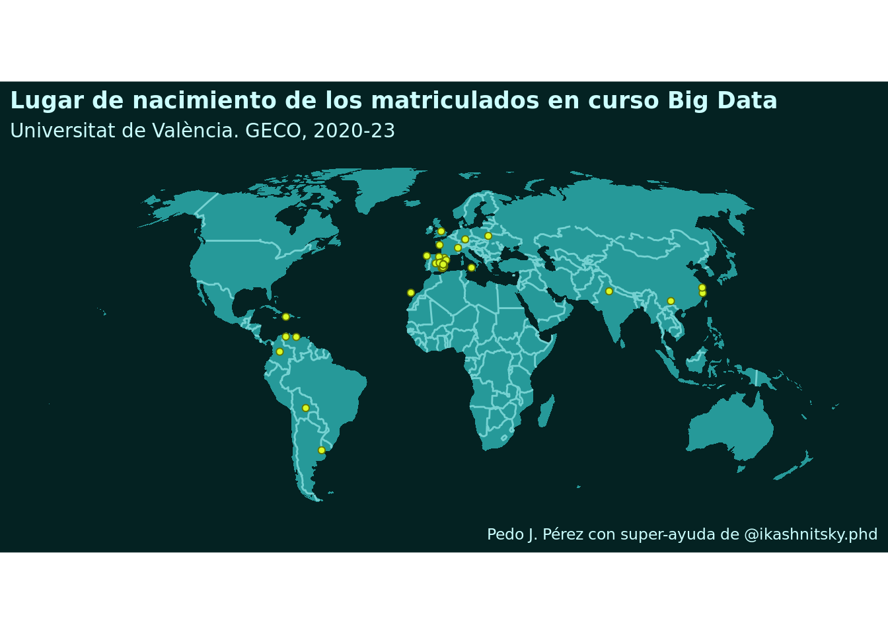

Según la Wikipedia, la geolocalización es el proceso de determinar la ubicación o la posición geográfica de un objeto en la superficie terrestre. Es decir:
La geocodificación consite en, partiendo de una dirección o del nombre de un lugar, obtener sus coordenadas.
Por su parte, la geocodificación inversa realiza la tarea opuesta: partiendo de unas coordenadas, obtener una dirección dirección física o un topónimo. Este proceso permite la identificación de direcciones postales, lugares o subdivisiones territoriales tales como parajes, barrios, códigos postales, municipios, provincias o país a partir de un par de coordenadas .
En nuestro caso, la geolocalización consistirá en obtener la latitud y longitud de una dirección postal. Por supuesto lo haremos con R. Es un ejercicio que suelo hacer en clase: antes de que se inicien las clases, pido a los matriculados que contesten a un cuestionario. Allí les pido, entre otras cuestiones, que me indiquen su lugar de nacimiento: país y municipio. Obviamente usamos estos datos en clase para geolocalizar el lugar de nacimiento de los estudiantes.
2 Ejemplo
Vamos a usar estos datos de ejemplo. Como ves es un archivo Ggoogle Sheets. Los datos ya están casi arreglados del todo. Los arreglé así:
Código
library(tidyverse)library(googlesheets4) #- obtener el sheet (hay que autorizar)lista_sheets <- googlesheets4::gs4_find() id_sheet <- lista_sheets %>%filter(name =="Programación y manejo de datos (2019-2020) (respuestas)") %>%pull(id)my_sheet <- googlesheets4::read_sheet(id_sheet) #- arreglando (un poco) los datosdf <- my_sheet %>% janitor::clean_names(df) %>% dplyr::select(1, 2, pregunta_9, pregunta_10) names(df) <-c("year", "nombre", "lugar_nac", "cancion")df <- df %>%mutate(year = stringr::str_extract(year, "^[0-9]{4}"))df <- df %>% tidyr::separate(lugar_nac, into =c("pais", "municipio"), sep =" - ") df <- df %>% tidyr::separate(cancion, into =c("grupo", "cancion", "ruta"), sep =" - ") df <- df %>%mutate(across(grupo:ruta, ~str_remove(.x, "(<|< )")))df <- df %>%mutate(across(grupo:ruta, ~str_remove(.x, "(>| >)" )))df <- df %>%mutate(across(pais:ruta, ~str_squish(.x)))#- guardando en Google Drivemy_ss <- googlesheets4::gs4_create(name ="matriculados_BigData_blog", sheets ="respuestas")write_sheet(df, ss = my_ss, sheet ="respuestas")
Los datos arreglados, como hemos visto antes, los guardé en un Google Sheet. Para leerlos en R, usamos el paquete gsheet. Además, vamos a quitar los NA’s con tidyr::drop_na().
Fíjate que en df hay dos columnas con información sobre el lugar de nacimiento: pais y municipio. Con está información podemos geolocalizar el lugar de nacimiento de los matriculados. Para ello, vamos a usar el paquete tidygeocoder que internamente hace uso de Nominatim, un servicio de geolocalización de código abierto asociado a OpenStreetMap. Concretamente, para geolocalizar, usaremos la función tidygeocoder::geocode().
Otra forma de hacerlo, quizás la más común, es poner toda la información sobre, en este caso, el lugar de nacimiento, en una sola columna, que llamaremos text_to_geocode, que será la que usaremos para geolocalizar. Veámoslo
De cualquiera de las 2 maneras tendríamos en df_geocoded dos nuevas columnas llamadas long y lat que contienen la longitud y la latitud, del lugar de nacimiento de los matriculados. Ya tenemos la información geolocalizada!!!
Bueno , pues ya estaría 😊 … pero, ya que estamos, vamos a hacer un mapa para visualizar donde nacieron los matriculados a mi curso de R.
3 Visualización
Antes de hacer el mapa, hay que convertir la longitud y latitud en un objeto sf. Para ello:
Este enfoque lo trabajamos bastante en clase. ya lo veremos, pero aquí voy a usar el código de este post. Hace un gráfico muy-muy chulo. Tal como:
Código
# get world map outline (geometrías de los países)world_outline <- spData::world |> sf::st_as_sf()# let's use a fancy projectionworld_outline_robinson <- world_outline |> sf::st_transform(crs ="ESRI:54030")country_borders <- world_outline_robinson |> rmapshaper::ms_innerlines()
Ahora ya podemos hacer el mapa.
Código
world_outline_robinson |>filter(!iso_a2 =="AQ") |># get rid of Antarcticaggplot()+geom_sf(fill ="#269999", color =NA)+geom_sf(data = country_borders, size = .25, color ="#269999"|> prismatic::clr_lighten())+geom_sf(data = df_plot, fill ="#dafa26", color ="#dafa26"|> prismatic::clr_darken(),size =1.5, shape =21 )+coord_sf(datum =NA)+theme_minimal(base_family ="Atkinson Hyperlegible")+labs(title ="Lugar de nacimiento de los matriculados en curso Big Data",subtitle ="Universitat de València. GECO, 2020-23",caption ="Pedo J. Pérez con super-ayuda de @ikashnitsky.phd" )+theme(text =element_text(color ="#ccffff"),plot.background =element_rect(fill ="#042222", color =NA),axis.text =element_blank(),plot.title =element_text(face =2, size =13, color ="#ccffff") )

Con tmap
Por último, vamos a hacer el mapa con tmap. La documentación está aquí.
Recordar que los mapas se pueden mejorar mucho. Lo veremos, al menos un poco, en clase
4 Otro ejemplo
En el curso de R para profes solía hacer este otro ejemplo: gelocalizar el centro que ofrece el curso, el SFPIE. Era algo como:
Código
#- creo un df con la información postal del SFPIEdf <-data.frame(adress ="Facultad de Economía", street ="Avinguda dels tarongers", city ="Valencia", postalcode ="46022",country ="Spain")df <- df %>%mutate(text_to_geocode =paste( street, city, country, sep =", "))#- geolocalizamos con el pkg tidygeocoder df <- df %>% tidygeocoder::geocode(text_to_geocode, method ="osm")# df <- df %>% tidygeocoder::geocode(street = street, city = city, postalcode = postalcode, country = country, method = "osm")
Una vez hecha la geolocalización vamos a visualizar el lugar en un mapa. Para ello, vamos a usar leaflet.
Vamos a poner un marcador en el mapa para que se vea mejor el lugar exacto donde está el SFPIE.
map <- map %>%addMarkers(lng = df$long, lat = df$lat, popup ="Facultat") %>%addPopups(lng = df$long, lat = df$lat, popup ="Facultat") map
Con leaflet se pueden hacer muchas mas cosas; ejemplos aquí. Por ejmeplo, vamos a hacer que si pinchas en el marker, se vea una imagen
library(leafpop)img <-"https://www.uv.es/recursos/fatwirepub/ccurl/12/318/P01.jpg"map2 <- leaflet::leaflet() %>% leaflet::addTiles() %>% leaflet::setView(lng = df$long, lat = df$lat, zoom =16) %>%addCircleMarkers(lng = df$long, lat = df$lat, group ="pnt") %>%addPopupImages(img, group ="pnt")map2
Otro posibilidad es usar diferentes “providers”. Infoprmación aquí
#- hay muchos "providers": http://leaflet-extras.github.io/leaflet-providers/preview/#- por ejemplo:# map2 %>% addProviderTiles(providers$Stamen.Toner)# map2 %>% addProviderTiles(providers$Stamen.Terrain)# map2 %>% addProviderTiles(providers$Esri.NatGeoWorldMap)map2 %>%addProviderTiles(providers$MtbMap) #- con carril bici
5 Algunos detalles
Para geolocalizar he usado 2 paquetes: primero usé ggmap, pero se volvió un servicio de pago, así que cambié a tidygeocoder.
tidygeocoder es un paquete que permite hacer geolocalización y geolocalización inversa. Internamente, tidygeocoder hace uso de distintos servicios de geolocalización, como Nominatim, Google Maps, Bing Maps, OpenCage, etc. Puede ver detalles aquí.
Por supuesto, hay más paquetes, como por ejemplo rgeocodio, pero no los he usado.
Recientemente ha salido un nuevo paquete para geolocalizar: arcgeocoder, pero tampoco lo he usado.
![]()